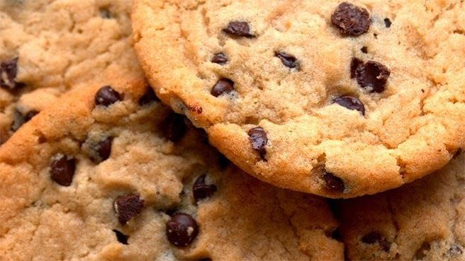

Recett de cookies
Recette pour 6 personnes!

Ingrédients;
- 1 oeuf
- 85 g de beurre
- 150g de farine
- 100g g de peptes de chocolat
- 1 sachet de sucre vanille
- 1 cuillere a cafe de levure chimique
- 1/2 cuillere a cafe de sel
Préparation
- Laissez ramollir le beurre à temperature ambiante. Dans un saladier, malaxez le avec le sucre
- Ajoutez l'oeuf et éventuellement le sucre vanillé
- Versez progressivement la farine, la levure chimique, le sel et les pépites de chocolat. Mélangez bien
- Beurrez une plaque allant au four ou recouvrez la d'une plaque silicone. A l'aide de deux cuilleres ou simplement avec les mains, formez deux noix de patesen les espaçant car elles s'étaleront à la cuisson.
- Faites cuire 8 à 10 minutes à 180° soit thermostat 6. Il faut les sortir dès que les contours commencent à brunir.